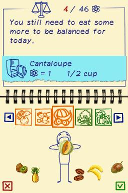

My Weight Loss Coach — iPhone & iPod touch

Platform: iPhone & iPod touch | Status: Shipped | Role: Lead Game Designer (port)
Led the design for the iPhone port of the DS title "My Weight Loss Coach." With very few mobile apps or games to reference at the time, the core challenge was inventing intuitive touch-based interactions and UX patterns suited to early iPhone and iPod touch. Focused on adapting DS mechanics to multitouch and simplifying flows for mobile.
Genre: iPhone, Education, Casual